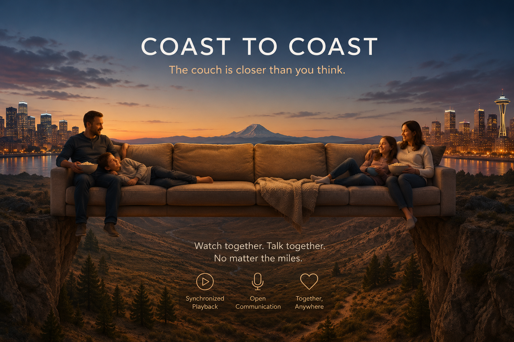

Impala Streamer Core
Impala Streamer Core is built for clarity, calm, and control. A media experience that behaves predictably, respects attention, and stays faithful to its purpose.
Impala Streamer Core
Impala Streamer Core runs entirely on your machine. No cloud dependency. No surveillance. No behavioral shaping. Just your library, your space, and your rules.

- Local Library — internal storage or USB volumes
- Full Local Indexing — fast, private, offline
- Local Media Server — HTML5 playback on any LAN device
- Supported Formats — MP3, FLAC, MP4, MKV (auto-ranscode)
Impala Streamer Core is free forever.
Cloud Option

The Cloud Option is a validation layer that unlocks premium features. It does not track, profile, or harvest. It coordinates between your local installed app, and the add on services. When you activate the Cloud Option, you also get Live Stream, which lets you watch WebCast content, and metadata for music, Metadata is turned off in settings by default since it invovles external requests. You can enable it if you want richer information.
Cloud Option — $2/mo (introductory)
Premium Add-Ons

SyncPlay
Shared playback that feels natural. Start together, stay together, with master or shared control. No countdown hacks. No drift. No friction.
$2/mo

Coast to Coast
SyncPlay extended with voice communication. Hands-free or push-to-talk. A quiet, focused way to watch together from anywhere.
$2/mo

Movie Metadata
Rich metadata without surveillance. Posters, cast, runtime, summaries — delivered without external tracking. Your library stays yours.
$4/mo
Design Mandate
Impala is governed by a short set of principles.
- Simplicity is reliability
- Remove complexity, remove failure
- Stay faithful to purpose
- No marketing in app, No ads. No distractions.
- Stability over novelty
- Sovereign systems — You own your space.
- Zero manipulation
- No algorithms shaping behavior